class: center, middle # Convolutional Neural Networks Guillaume Ligner - Côme Arvis --- # Fields of application We are going to find out about convolutional networks<br/> What are they used for ?<br/> -- Most importantly in **computer vision** .center[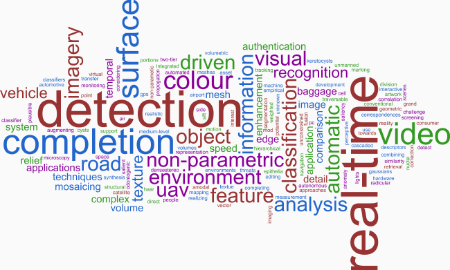] --- # Fields of application Computer vision: object detection .center[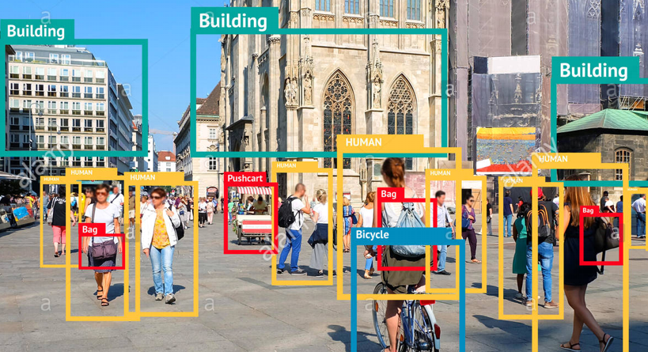] --- # Fields of application Computer vision: ImageNet classification .center[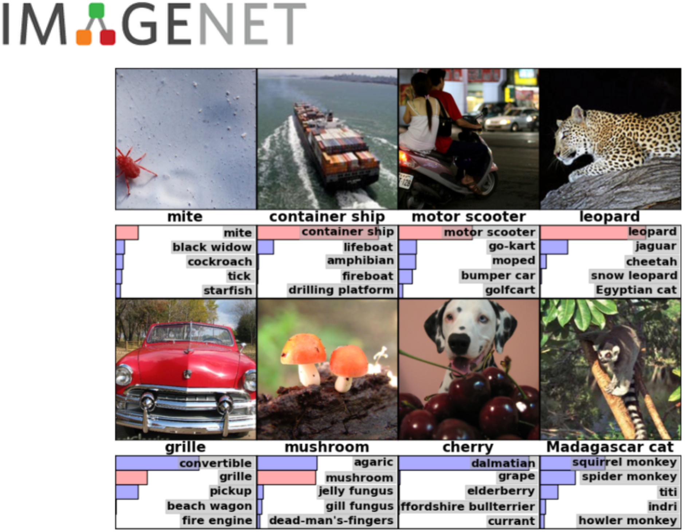] --- # Fields of application Computer vision .center[<img src="images/applications_many.png " style="width: 700px;margin-top: 2%" />] --- # Fields of application Computer vision: example of Mask-RCNN application for segmentation .center[<img src="images/mask_rcnn.gif" style="width: 580px;margin-top: 10%" />] --- # Fields of application Another few examples - Speech recognition & speech synthesis - Natural Language Processing - Any problem with a spatial (or sequential) structure --- # The Convolution Operation - In Deep Learning we usually talk about Convolution networks, layers, operations - Instead, most Deep Learning frameworks implement in practice a related function: the cross-correlation .left-column50[ 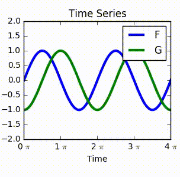 ] .right-column50[ 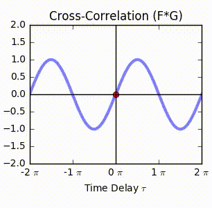 ] --- # The Convolution Operation - Discrete cross-correlation between two functions $f$ and $g$: $$ (f \star g) (x) = \sum\_{b-a = x} f(a) . g(b) = \sum\_{a} f(a) . g(x + a) $$ - 2D-convolutions (actually 2D cross-correlation): $$ (f \star g) (x, y) = \sum_n \sum_m f(n, m) . g(x + n, y + m) $$ $f$ is a convolution **kernel** or **filter** applied to the 2-d map $g$ (our image) --- # The Convolution Operation - Here is the computer vision point of view of the convolution operation $$ (k \star im) (x, y) = \sum\limits\_{n=0}^2 \sum\limits\_{m=0}^2 k(n, m) . im(x + n, y + m) $$ - Kernel $k$ here is of shape $(3,3)$ and image $im$ of shape $(6,6)$</br> .center[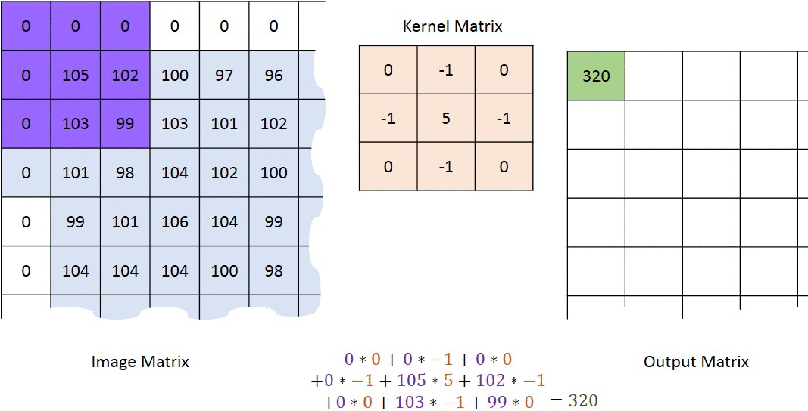] --- # The Convolution Operation A snapshot example of the operations performed - Element of the output tensor is formed by applying the kernel to the corresponding region in the input tensor - Output is the sum of the entrywise (Hadamart) product between kernel and region of the input .center[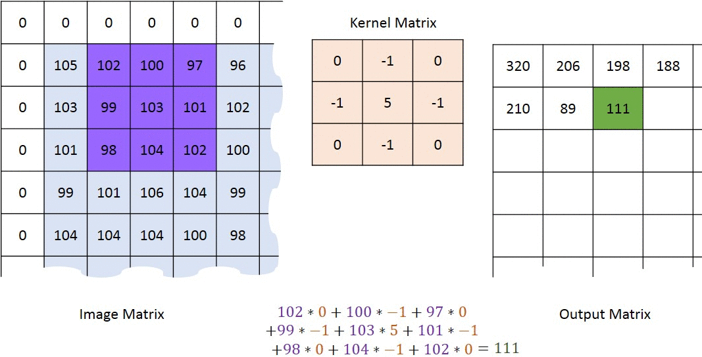] --- # Convolution in images - What we just saw is the convolution operations between a $2$d kernel and a $2$d image - An image is broken into several $2$d descriptions: $1$ per color - RGB image is a 3d tensor (3, H, W), meaning 3 color matrix $(H, W)$ - Example of $3$d convolution formula with $(4,4,3)$ kernel $$ (k \star im) (x, y, z) = \sum\limits\_{n=0}^{4-1} \sum\limits\_{n=0}^{4-1} \sum\limits\_{c=0}^{3-1} k(n, m, c) . im(x + n, y + m, z + c) $$ --- # Convolution in images - Feature map elements formed by applying a $3$d kernel to $3$d input regions - Convolution operations for all $(x, y)$ lead to a (H, W) matrix - Final output is a $(K, H, W)$ $3$d tensor: - One (H, W) matrix per kernel for all $K$ kernels - Sets of convolution operations performed by different kernels lead to different characteristics being extracted from the image - Some padding used, we will see about that later .center[<img src="images/convolution.gif" style="width: 400px;margin-top: 2%;margin-left: -10%" />] --- # Motivations for CNNs - Convolution leverages three important ideas - **Sparse interactions**, **Parameter sharing**, **Equivariant representations** Sparse interactions (Local connectivity) - An output neuron depends only on a few local input neurons - This is accomplished by making the kernel smaller than the input .left-column50[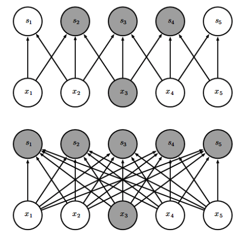] <br><br> .right-column50.small80[ - $(Top)$ When $s$ is formed by convolution with a kernel of width $3$, only three outputs are affected by $x_3$ - $(Bottom)$ When $s$ is formed by matrix multiplication, connectivity is no longer sparse, so all of the outputs are affected by $x_3$ ] --- # Motivations for CNNs Parameter sharing - The same parameter is used in more than one function in a model - In a traditional neural net, each element of a weight matrix is used **exactly once** - In a conv' net, each kernel parameter is used at every location of the image (except boundary pixels) <br/> .left-column40[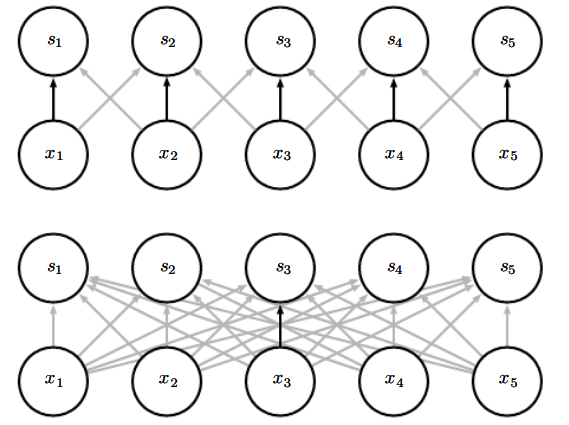] .right-column60.small70[ - Black arrows indicate uses a parameter in an output - $(Top)$ The black arrows indicate uses of the **central element of a 3-element kernel** in a convolutional model - Parameter involved in **all output neurons $s_i$** - $(Bottom)$ **Single** black arrow indicates **single** use of the central element of the weight matrix in a fully connected model - Model has no parameter sharing, parameter involved in **output neuron $s_3$** only ] --- # Motivations for CNNs Equivariance of convolution to translation - To say a function is equivariant means that if the input changes, the output changes in the same way - Specifically, a function $f$ is equivariant to a function $g$ if <br/> - $f(g(x)) = g(f (x))$<br/> - $ f \circ g (x) = g \circ f (x)$ - In our context, saying that convolution is equavariant to translation means that: .center[ $Translation \circ Convolution(image) = Convolution \circ Translation(image)$ ] --- # Motivations for CNNs .small90[ Equivariance of convolution to translation - Let's analyze a concrete example: ] -- .center[<img src="images/equiv1.png" style="width: 800px;margin-top: -1%;margin-left: -10%" />] --- # Motivations for CNNs .small90[ Equivariance of convolution to translation .center[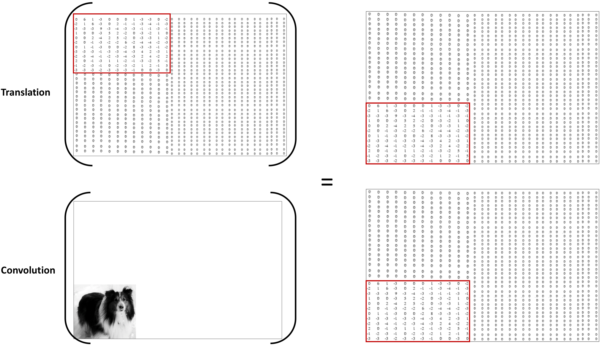] ] -- .fsmall80[ <br/> We visually showed how: .center[$Translation \circ Convolution(image) = Convolution \circ Translation(image)$] ] --- # Multiple convolutions .center[ <img src="images/multiple_convolution_1.png" style="width: 650px;margin-top: -5%" /> ] - Red feature map $=$ result of all convolution operations - Output feature map represents red kernel trying to extract one type of characteristic from the image at all locations - .firebrick[**1**] kernel, .firebrick[**1**] set of convoltution operations, .firebrick[**1**] feature map, .firebrick[**1**] type of characteristic extracted, thus feature map output of shape (24,24,.firebrick[**1**]) and kernel params tensor of shape (5,5,3,.firebrick[**1**]) --- # Multiple convolutions .center[ <img src="images/multiple_convolution_1.png" style="width: 650px;margin-top: -5%" /> ] - Often we want to extract more than one type of characteristic --- # Multiple convolutions .center[ 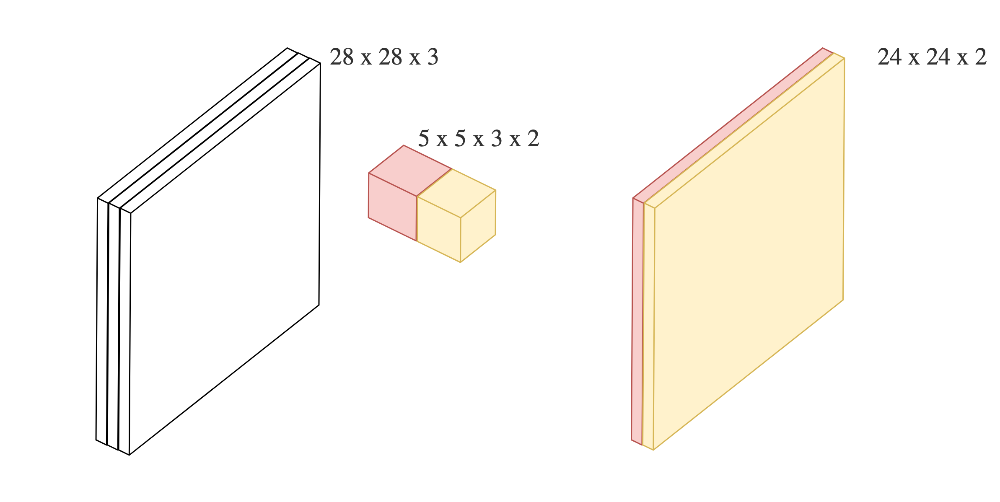 ] - Often we want to extract more than one type of characteristic - Following this example we use another kernel of shape $(5,5,3)$ --- # Multiple convolutions .center[ 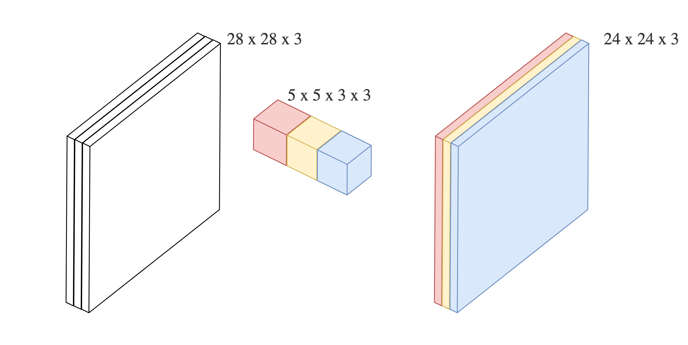 ] - Each kernel extracts a type of characteristic at all locations of the image and outputs $1$ more feature map --- # Multiple convolutions .center[ 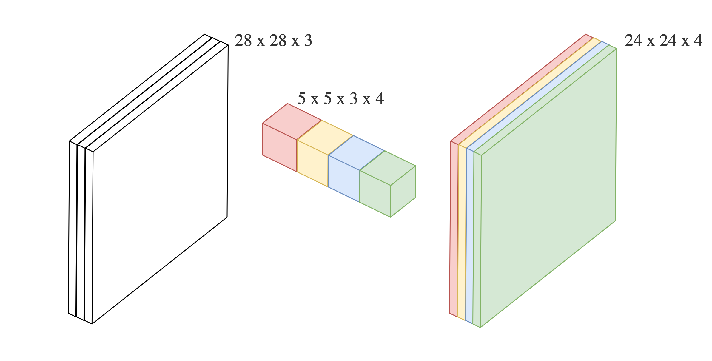 ] - Final kernel params' is of shape $(5,5,3,4)$, final feature map is $(24,24,4)$ - $4$ stands for $4$ different kernels for $4$ sets of convolution operations and $4$ feature maps outputted, $1$ per kernel --- # MLP vs Convolutional Network codes **Fully Connected Network: MLP (Keras functional API)** ```python input_image = Input(shape=(28, 28, 1)) x = Flatten()(input_image) x = Dense(128, activation='relu')(x) x = Dense(10, activation='softmax')(x) mlp = Model(inputs=input_image, outputs=x) ``` **Convolutional Network (Keras functional API)** ```python input_image = Input(shape=(28, 28, 1)) *x = Conv2D(32, 5, activation='relu')(input_image) x = Flatten()(x) x = Dense(128, activation='relu')(x) x = Dense(10, activation='softmax')(x) convnet = Model(inputs=input_image, outputs=x) ``` .small80.center[ 2D spatial organization of features preserved untill `Flatten` ] --- # Strides .small80[ - Strides: increment step size for the convolution operator - For stride size $k$ kernel performs convolution operation, skips next $k-1$ pixels and performs another convolution operation and so on - There are $vertical$ and $horizontal$ stride sizes which may not be the same - Strides reduce the size of the output map - Stride of shape $(2,2)$ ($2$ $vertical$ and $2$ $horizontal$) reduce number of numerical outputted quantities by roughly $2 \times 2$ ] .center[ <img src="images/no_padding_strides.gif" style="width: 215px;" /> ] .center.small[ Example with kernel size $3 \times 3$ and a stride of $2$ (image in blue) ] --- # Strides - Essentially used to reduce the number of activations and parameters in the network and reduce the output dimensionality - Allows to reduce the network number of parameters without diminishing the number of filters - Used when one does not want too much overlap between convolution operations --- # Padding [//]: # (Useful to keep output spatial dimension of feature maps constant across kernels of different shapes) <br/> - Padding: artificially fill borders of image - Useful with strides and large kernels - Because of strides kernel might end up virtually out of the image - Usually: fill with 0s - Useful to preserve the dimensions of the input to the output .center[ <img src="images/same_padding_no_strides.gif" style="width: 210px;" /> ] --- # Dealing with shapes **Kernel** or **Filter** shape $(F, F, C^i, C^o)$ .left-column40.small80[ - $F \times F$ kernel size, - $C^i$ input channels: e.g. of colors - $C^o$ output channels: number of feature maps Kernel number of parameters: $(F \times F \times C^i + 1) \times C^o$ - $1$ stands for the bias, 1 per kernel of shape $(F, F, C^i)$ - There is $1$ kernel per outputted feature map **Activations** or **Feature maps** shape: - Input $(W^i, H^i, C^i)$ - Output $(W^o, H^o, C^o)$ ] .right-column60[ .center[ ] ] .small70.center[ $W^o = \frac{(W^i +2P) - F}{S} + 1$ $(P)$ being the amount of zero padding around borders, $(S)$ stride applied ] --- # Dealing with shapes Reminders about padding .left-column50[ - Convenient to pad around borders - Size of padding is a hyperparameter ] .left-column50[ - To control the output spatial size - To preserve shape of the input ] .center[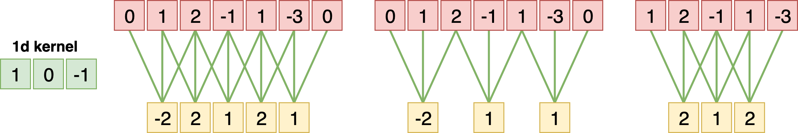] - In example: $1d$ kernel of size $F = 3$, $1d$ input of size $W = 5$, zero-padding around borders $P = 1$ - Left: stride of $S = 1$, giving output of size $\frac{(5 + 2 \times 1) - 3}{1} + 1 = 5$ - Middle: stride of $S = 2$, giving output of size $\frac{(5 + 2 \times 1) - 3}{2} + 1 = 3$ - Right: No padding, output size is $3$: it is the number of kernels that horizontally fit across the image --- # Dealing with shapes **Constraints on strides** - This formula means that hyperparameters have mutual constraints - In $1$d convolution with zero padding example stride S = 3 was impossible - $\frac{(5 + 2 \times 1) - 3}{3} = 1.333\cdots$ i.e. not an integer, indicating that the kernels don’t "fit" neatly across the input **Going back to shapes** - $W^i +2P$ represents virtual width of image with padding - $(W^i +2P) - F$ represents space left on image after placing kernel over it - convolution operation followed by stride produces $1$ scalar on feature map - $(W^i +2P) - F$ must be a multiple of stride - $W^o = $ number of scalars produced during horizontal striding across image <br> - $W^o = \frac{(W^i +2P) - F}{S} + 1$ --- # Pooling - No parameters: typically **max** or **average** of $n \times n$ units - Using pooling we assume that each pool unit should be invariant to small translations of the input - Useful when the presence of a feature in the image matters and not where it is in the picture .center[ 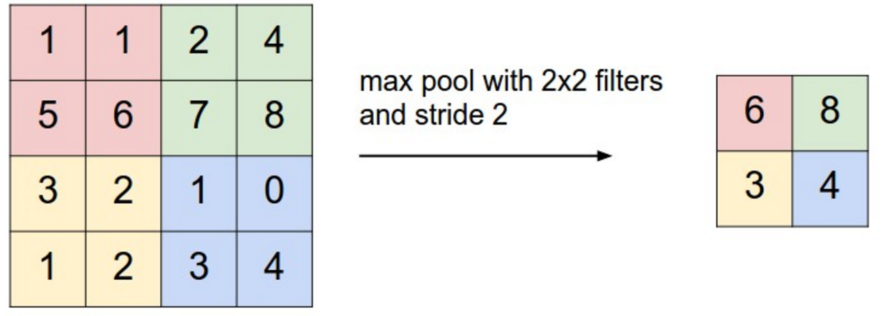 ] --- # Hierarchical representation .center[ <img src="images/lecunconv.png" style="width: 760px;" /> ] --- # Pre-trained models - Training a model can take days if it has to extract concepts for lots of different classes from millions of images - Many models are trained on ImageNet, their weights are publicly available - Those architectures and weights have been trained on datasets and hardware not normally available to the general public --- # Transfer learning - Load a public model - Use the pre-trained weights by removing the layers used to address the specific problem (fully connected layers)</br> → Stop at the last layer that extracts concepts (conv/pool layers) - Loaded network is used as a generic feature extractor - Add your own set of fully connected layers that lead to the answer to your task using the high-level representation of the image - Train the weights of the newly added layers on the new task --- # Data augmentation .left-column40[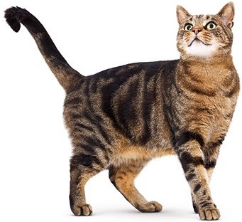] .-column60[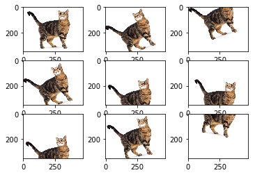] - Object translations make the object invariant but the noise (background) changes - The model focuses on the invariant part to provide the answer - Distorsion and rotations of the object enrich the model learning with shapes that might not be in the training set but likely belong to the true distribution $(X, Y)$ --- # Data augmentation With Keras: ```python from keras.preprocessing.image import ImageDataGenerator image_gen = ImageDataGenerator( rescale=1. / 255, rotation_range=40, width_shift_range=0.2, height_shift_range=0.2, shear_range=0.2, zoom_range=0.2, horizontal_flip=True, channel_shift_range=9, fill_mode='nearest' ) train_flow = image_gen.flow_from_directory(train_folder) model.fit_generator(train_flow, train_flow.n) ``` --- # ImageNet: an image database .center[ 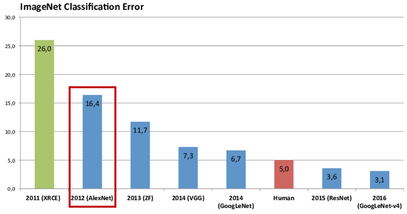 ] - Since 2010 **ImageNet Large Scale Visual Recognition Challenge** (**ILSVRC**) is the competition where research teams evaluate their algorithms on the “ImageNet” image database - Tasks involve classification, detection from images and video - They compete to achieve higher accuracy on several visual recognition tasks - In **2012** **AlexNet** improved previous best score by **36**% --- # Architectures: AlexNet .center[ <img src="images/alexnet.png" style="width: 750px;margin-top: 0%;margin-left: 0%" /> ] - Depth of the model was essential for its high performance<br/> → Computationally expensive, made feasible due to GPUs - **AlexNet** contained eight layers; the first **five** were **convolutional layers**, and the last **three** were **fully connected** layers - Marked start of an industry-wide artificial intelligence boom in usage of **deep convolutional networks** --- # Architectures: VGG-16 .center[ <img src="images/vgg.png" style="width: 450px;margin-top: 0%;margin-left: 0%" /> ] <br/> - VGG = Visual Geometry Group, an academic group at Oxford University - VGG is also the CNN architecture that secured $1^{st}$ and $2^{nd}$ spots in the localisation and classification tasks in ImageNet 2014 --- # Architectures: VGG-16 .center[ <img src="images/vgg.png" style="width: 450px;margin-top: 0%;margin-left: 0%" /> ] <br/> - The main contribution of VGG is to show that classification/localisation can be improved by increasing the depth of CNN in spite of using smaller kernels - CNNs prior to VGG used kernels $7\times7$ and $11\times11$ against $3\times3$ in VGG <br>$\rightarrow$ But they were not as deep as VGG - There are few variants of VGG, the deepest one has $19$ weight layers --- class: middle, center # VGG memory and parameters --- ```md Activation maps Parameters INPUT: [224x224x3] = 150K 0 CONV3-64: [224x224x64] = 3.2M (3x3x3)x64 = 1,728 CONV3-64: [224x224x64] = 3.2M (3x3x64)x64 = 36,864 POOL2: [112x112x64] = 800K 0 CONV3-128: [112x112x128] = 1.6M (3x3x64)x128 = 73,728 CONV3-128: [112x112x128] = 1.6M (3x3x128)x128 = 147,456 POOL2: [56x56x128] = 400K 0 CONV3-256: [56x56x256] = 800K (3x3x128)x256 = 294,912 CONV3-256: [56x56x256] = 800K (3x3x256)x256 = 589,824 CONV3-256: [56x56x256] = 800K (3x3x256)x256 = 589,824 POOL2: [28x28x256] = 200K 0 CONV3-512: [28x28x512] = 400K (3x3x256)x512 = 1,179,648 CONV3-512: [28x28x512] = 400K (3x3x512)x512 = 2,359,296 CONV3-512: [28x28x512] = 400K (3x3x512)x512 = 2,359,296 POOL2: [14x14x512] = 100K 0 CONV3-512: [14x14x512] = 100K (3x3x512)x512 = 2,359,296 CONV3-512: [14x14x512] = 100K (3x3x512)x512 = 2,359,296 CONV3-512: [14x14x512] = 100K (3x3x512)x512 = 2,359,296 POOL2: [7x7x512] = 25K 0 FC: [1x1x4096] = 4096 7x7x512x4096 = 102,760,448 FC: [1x1x4096] = 4096 4096x4096 = 16,777,216 FC: [1x1x1000] = 1000 4096x1000 = 4,096,000 TOTAL activations: 24M x 4 bytes ~= 93MB / image (x2 for backward) TOTAL parameters: 138M x 4 bytes ~= 552MB (x2 for plain SGD, x4 for Adam) ``` --- ```md Activation maps Parameters INPUT: [224x224x3] = 150K 0 *CONV3-64: [224x224x64] = 3.2M (3x3x3)x64 = 1,728 *CONV3-64: [224x224x64] = 3.2M (3x3x64)x64 = 36,864 POOL2: [112x112x64] = 800K 0 CONV3-128: [112x112x128] = 1.6M (3x3x64)x128 = 73,728 CONV3-128: [112x112x128] = 1.6M (3x3x128)x128 = 147,456 POOL2: [56x56x128] = 400K 0 CONV3-256: [56x56x256] = 800K (3x3x128)x256 = 294,912 CONV3-256: [56x56x256] = 800K (3x3x256)x256 = 589,824 CONV3-256: [56x56x256] = 800K (3x3x256)x256 = 589,824 POOL2: [28x28x256] = 200K 0 CONV3-512: [28x28x512] = 400K (3x3x256)x512 = 1,179,648 CONV3-512: [28x28x512] = 400K (3x3x512)x512 = 2,359,296 CONV3-512: [28x28x512] = 400K (3x3x512)x512 = 2,359,296 POOL2: [14x14x512] = 100K 0 CONV3-512: [14x14x512] = 100K (3x3x512)x512 = 2,359,296 CONV3-512: [14x14x512] = 100K (3x3x512)x512 = 2,359,296 CONV3-512: [14x14x512] = 100K (3x3x512)x512 = 2,359,296 POOL2: [7x7x512] = 25K 0 *FC: [1x1x4096] = 4096 7x7x512x4096 = 102,760,448 FC: [1x1x4096] = 4096 4096x4096 = 16,777,216 FC: [1x1x1000] = 1000 4096x1000 = 4,096,000 TOTAL activations: 24M x 4 bytes ~= 93MB / image (x2 for backward) TOTAL parameters: 138M x 4 bytes ~= 552MB (x2 for plain SGD, x4 for Adam) ``` --- # Residual Networks: ResNet .center[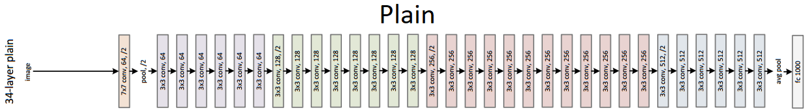] .center[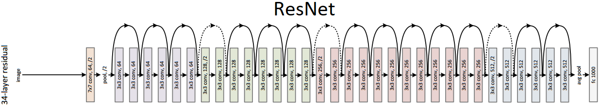] .small80[ Two appoaches to ResNet - When network without ResNet skip connections goes deeper and deeper, training may go wrong <br>$\rightarrow$ no longer extracts anything more useful from current feature maps <br>$\rightarrow$ Network can neither stabilize current feature maps by learning **identity function** that is difficult to learn, thus training becomes worse - The vanishing gradient problem, the output of a shallow layer disappears through too many layers ahead in the network ] --- # Residual Networks: ResNet .center[] .center[] .center[ $1$ every $2$ activations is propagated $2$ layers forward through a "skip connection" ] .left-column40[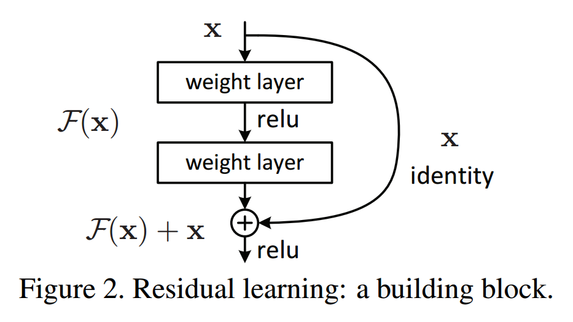] .right-column60.small70[ - Input block: $x$ output: $x + F(x)$ - Every $n$ layers a residue is added to $x$. This residue, equal to $0$ or not, is learned through a convolutional block - A block learns the residual with respect to the identity - Block learns $F(x)$ which is the residual (difference) of the output $F(x) + x$ with respect to the identity $x$ ] --- # Residual Networks: ResNet .center[] .center[] .left-column50.small90[ **Identity** function approach 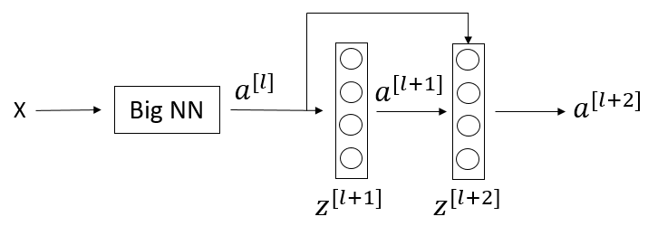 ] .right-column50.small70[ - $a^{l+2} = g(z^{l+2} + a^{l})$; $g(x) = reLU(x)$ - $a^{l+2} = g(W^{l+2} \cdot a^{l+1} + b^{l+2} + a^{l})$</br> → if $W^{l+2} = 0$ and $b^{l+2} = 0$ then $a^{l+2} = g(a^{l}) = a^{l}$ </br> → **$a^{l}$ copied to $a^{l+2}$** - Means that identity function can easily be learned - Somehow guaranteed that performance will either stabilize or improve ] --- # Residual Networks: ResNet .center[] .center[] .left-column50.small90[ **Vanishing gradient problem** approach ] .right-column50.small70[ - $a^{l+2} = g(z^{l+2} + a^{l})$; $g(x) = reLU(x)$ - $a^{l+2} = g(W^{l+2} \cdot a^{l+1} + b^{l+2} + a^{l})$</br> - $W$ and $b$ are **not** set to $0$ - Gradient issue is solved by propagating information forward and constructing an ensemble of shallow networks ] --- # State of the art Automated finding of right architectures .left-column100[- Reinforcement Learning ex: ENAS Efficient Neural Architecture Search] <br><br> .left-column40[<img src="images/enas.gif" style="width: 280px;margin-top: -7%;margin-left: 5%" />] .right-column60[ - An RL algorithm samples Deep Convolutional Network architectures - Rewards are the accuracies on validation set - Algorithms becomes better and better at selecting right architectures for the problem at hand ] <br> .left-column100[- Evolutionary algorithms] --- # Beyond Image Classification ### Object detection - We don't know in advance the number of objects in the image - Object detection relies on *object proposal* and *object classification* **Object proposal:** find regions of interest (RoIs) in the image **Object classification:** classify the object in these regions <br/> **Object Detection = Object proposal + Object classification** $\rightarrow$ One example: **YOLO algorithm** --- # Beyond Image Classification ### Segmentation - Output a class map for each pixel (for example: cat vs background) - We predict a class for each pixel in image - Usually classes are: “pixel belongs to object of interest” or “pixel does **NOT** belong to object of interest” (background) $\rightarrow$ One example: **Mask-RCNN** --- # Beyond Image Classification .center[ 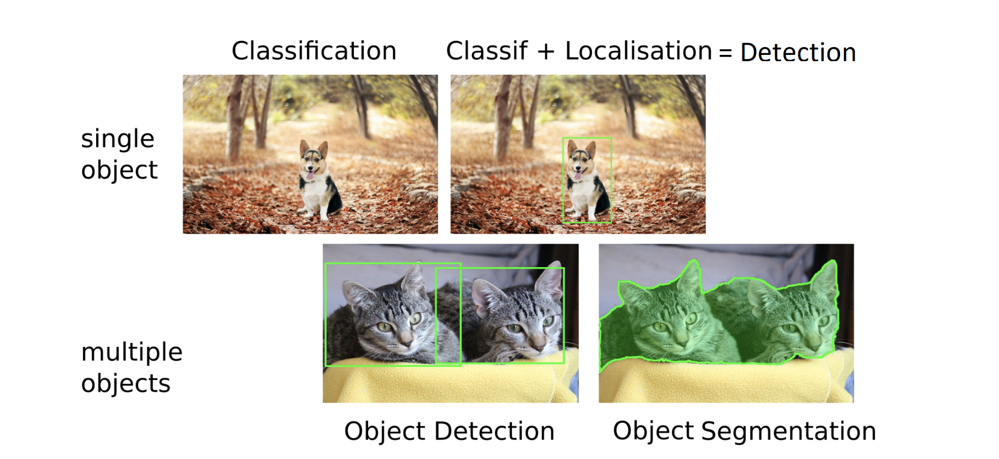 ] --- # YOLO - You Only Look Once .center[ <img src="images/yolo1.png" style="width: 450px;" /> ] For each cell of the $S \times S$, predict: - $B$ **boxes** - $4$ values per box for the center ($x$ and $y$), width ($W$) and height ($H$) - $x$ and $y$ relative positions in the cell, H and W are normalized - $B$ **confidence scores** C ($1$ per box) - $k$ **probabilities**, $1$ proba per class. Each proba is the probability of this class being inside the cell conditioned on an object being in cell --- # YOLO - You Only Look Once .center[ <img src="images/yolo1.png" style="width: 450px;" /> ] For each cell of the $S \times S$: - Confidence scores are {$C_1, ..., C_B$}, probabilities are {$p_1, ..., p_k$} - There are $B \times k$ $(C_i, p_j)$ pairs for each gridcell --- # YOLO - You Only Look Once .center[ <img src="images/yolo1.png" style="width: 450px;" /> ] For each cell of the $S \times S$: - Considering pairs $(C_i, p_j)$ we keep cases where probability to **have an object in cell** is high AND **probability of classified object** is high - We define a thresold - Final detection (localisation + classif): pair gridcell and class $j$ where **$C_i \times p_j > thresold$** --- # Mask-RCNN .center[ 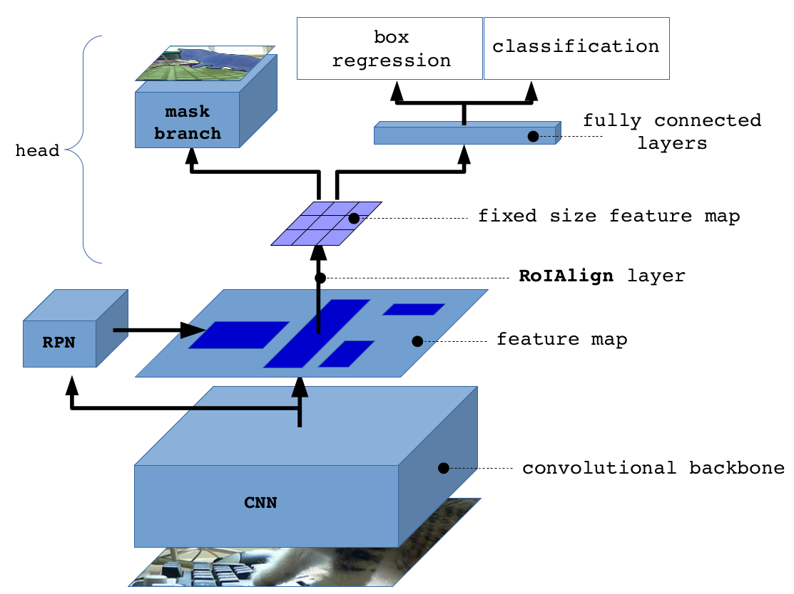 ] --- # Mask-RCNN - A Deep Neural Network architecture to address segmentation - It separates objects in images or videos - For a given image, it outputs bounding boxes, class and binary mask for each box .center[ <img src="images/mask_rcnn_example.png" style="width: 450px;" /> ] --- # Mask-RCNN - Stage 1: a CNN, refered to as the backbone network, extracts characteristics from the image. It outputs the image feature map - It is usually a ResNet or VGG, on its own or part of a FPN network. - Stage 2: the Region Proposal Network (RPN) takes in the feature map, predicts input regions that should have an object in them - Stage 3: RoI align algorithm selects a fixed size subpart of the feature map for each proposed region - It is used to predict a newly refined bounding box, the class and a $28\times28$ mask that is next extended to fit the proposed region